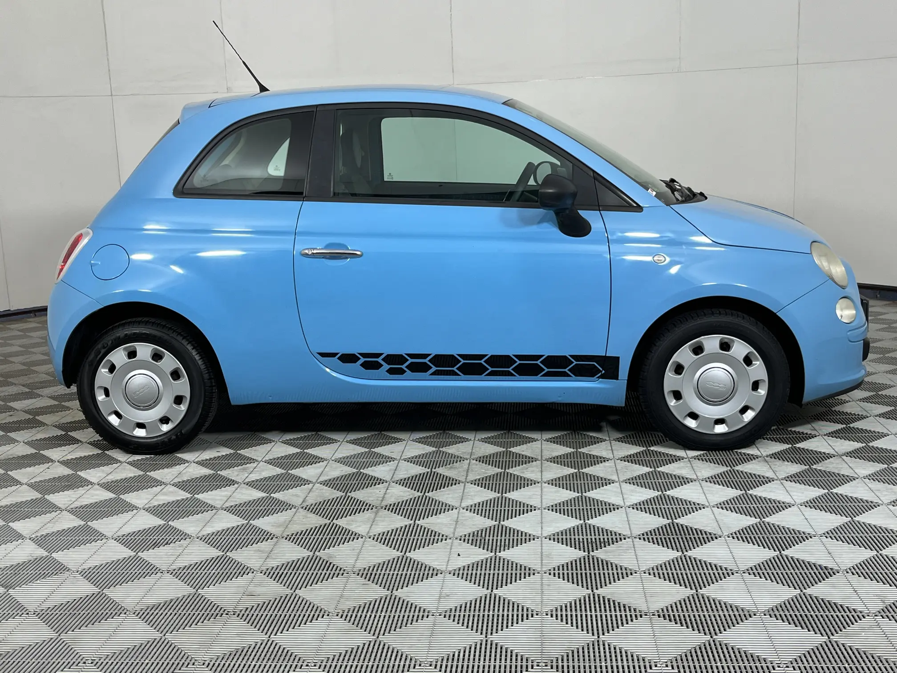
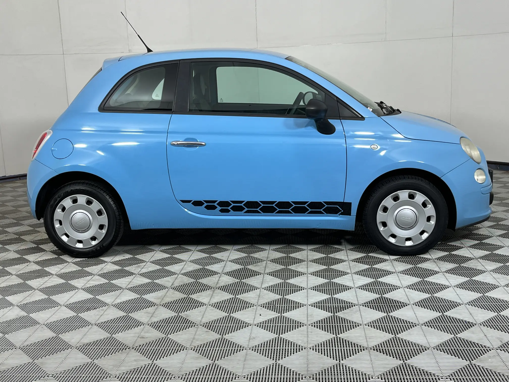

WELCOME TO AUTO4SALE
Here we Sell cars.
Auto 4 Sale was founded in 2010 by ITVarsity in South Africa, a group of students came together with their shared passion for entrepreneur-ship and automobiles. Together Auto 4 Sale was born. In Auto 4 Sale we strive for customer satisfaction, loyatly, entrepreneurship and the best afforable and comfortable luxury cars for you. Now we sell cars accross the nation.
We thank our founders, buyers and all you loyal customers who have made us who we are today, with you we can continue to give services for those in need. Whether it is your 1st car for your 20th we are happy to serve you.
Please Note: Auto4Sale and its history is Fictional and created for learning purposes.
 
